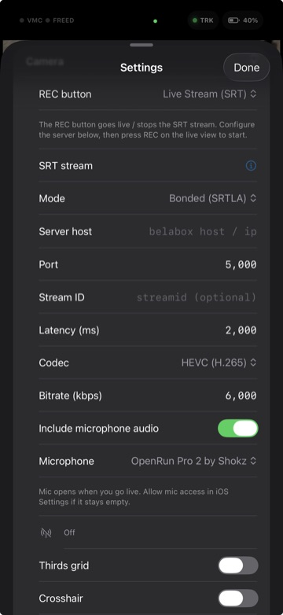

VTOKU Cam can take your VRL feed live over SRT, and bond several network connections at once with SRTLA so the stream stays up when any single connection gets shaky. This is the part that makes streaming out in the real world hold together.

SRT
SRT (Secure Reliable Transport) sends low-latency, error-corrected video to a compatible server or encoder. Point VTOKU Cam at your SRT endpoint and stream.
- Enter your SRT URL, including host, port, and any stream id your server expects.
- Set the latency and bitrate to match your server and your uplink.
SRTLA bonding
SRTLA (SRT Link Aggregation) spreads one SRT stream across multiple links. If you have Wi-Fi and cellular available, or more than one modem, SRTLA uses them together. When one link drops or slows, the others carry the stream, so you don't drop frames the moment you walk out of range.
- Point VTOKU Cam at your SRTLA receiver instead of a plain SRT endpoint.
- Enable the connections you want to bond. The app aggregates the available links into one resilient stream.
- Your server reassembles the bonded links and forwards a single SRT stream onward to your platform or switcher.
SRTLA servers
SRTLA needs a receiving server to reassemble the bonded links. You can rent a managed one or host your own:
- BELABOX Cloud, managed SRTLA relays from the team behind the SRTLA project.
- IRLServer, managed SRT, SRTLA, and RTMP relay endpoints for IRL streamers.
- Self-host with the open-source srtla receiver on your own VPS.
Auto scene switching. Pair your server with NOALBS to automatically switch to a "low bitrate" or BRB scene when your connection drops, then switch back when it recovers.
Why it matters for VRL. Real-life streaming moves. Bonding Wi-Fi and cellular keeps you live through dead spots and congestion, the same approach pro IRL streamers use, running on the phone in your hand.
Tips
- Give each link real headroom. Set a total bitrate the weakest expected combination can carry.
- Higher SRT latency rides out spotty mobile networks; lower latency feels snappier on good ones.
- Test your full path to the server before going live, then watch the link stats while you stream.
Next: VRL Link →